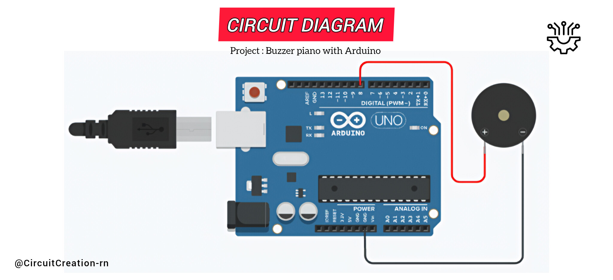

This beginner friendly Arduino project demonstrates how to play simple piano notes using a passive buzzer with an Arduino UNO without a laptop or PC. The Arduino code is written and uploaded using the Arduinodroid app on an Android phone with an OTG cable.

Connect the positive (+) terminal of the passive buzzer to Digital Pin 8 of the Arduino UNO.
Connect the negative (-) terminal of the passive buzzer to any GND pin of the Arduino UNO.
Connect the Arduino UNO to your Android phone using a USB cable and an OTG cable.
Open the Arduinodroid app, create a new sketch, and paste the piano melody code.
Tap the Compile button and tap the Upload button. The passive buzzer will begin playing the piano melody automatically.
The passive buzzer is connected to Digital Pin 8 of the Arduino UNO. The Arduino generates different frequencies using the tone() function, allowing the buzzer to play musical notes.
The program is uploaded directly from an Android phone using the Arduinodroid app and an OTG cable, eliminating the need for a laptop or desktop computer.
/*
Arduino LED Blink with Mobile Phone
Components:
- Arduino UNO R3
- Arduino Cable
- Passive Buzzer
- OTG Cable
- Jumper wires
- Arduinodroid App
- Android phone
Author: Circuit Creation RN
*/
int buzzer = 8;
void setup() {
}
void loop() {
tone(buzzer,262); // C
delay(400);
tone(buzzer,294); // D
delay(400);
tone(buzzer,330); // E
delay(400);
tone(buzzer,349); // F
delay(400);
tone(buzzer,392); // G
delay(400);
tone(buzzer,440); // A
delay(400);
tone(buzzer,494); // B
delay(400);
tone(buzzer,523); // High C
delay(800);
noTone(buzzer);
delay(1500);
}
The tone() function generates different musical note frequencies on Digital Pin 8. Each note is played for a short duration using the delay() function, while noTone() stops the sound before the melody repeats continuously.
You can write, compile, and upload Arduino sketches directly from your Android phone using the Arduinodroid app with an OTG cable no laptop or PC required.
Download from Google PlayAfter uploading the program through the Arduinodroid app using an OTG cable, the Arduino UNO continuously generates different musical note frequencies. The passive buzzer converts these frequencies into sound, creating a simple piano melody that plays repeatedly.
No. A passive buzzer is required to play musical notes using the tone() function.
Check that you are using a passive buzzer and verify the wiring and uploaded code.
This project uses the Arduino UNO R3.
{kind=link}